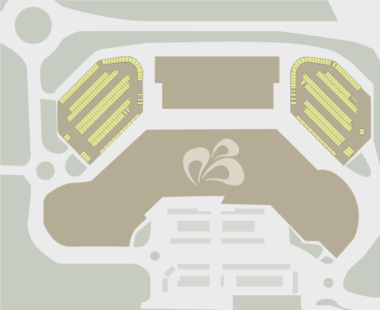

<div class="ui equal width center aligned padded grid"><div class="row bordered buttons"><div class="eight wide column"><div ng-click="aggiorna_mappa(-1);" class="ui button fluid pinterrato">Piano terra</div></div><div class="eight wide column"><div ng-click="aggiorna_mappa(0);" class="ui button fluid yellow pesterno">Primo Piano</div></div></div></div><div id="schede" style="background-color: transparent" class="ui segment fullscreen"><div class="mappa"><div></div></div></div>